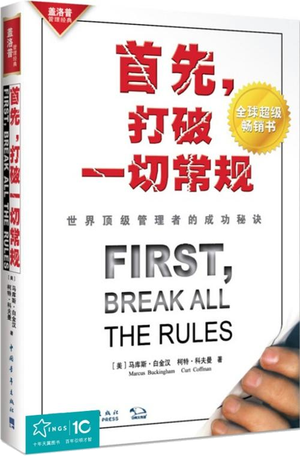

注：【】部分为笔者心得，非原文摘抄。
- 帮助一个员工的最好办法是促使他克服缺点。
- 对员工一视同仁，以免被人指责为偏袒。
- 一个经理的最大贡献就是让每个人对自身感到心情舒畅。
- 对人的提拔不要过头。
- 千万不要推卸责任。
- 帮助所有的员工不脱离其天生优势而更上一层楼。
- 因人而异地对待员工。
- 与员工交朋友。
- 如果一家公司在流失员工，那它就是在流逝价值。
- 测量一个工作场所的优势，可以简化为十二个问题：
- 我知道对我的工作要求吗？
- 我有做好我的工作所需要的材料和设备吗？
- 在工作中，我每天都有机会做我最擅长做的事吗？
- 在过去的七天里，我因工作出色而受到表扬吗？
- 我觉得我的主管或同事关心我的个人情况吗？
- 工作单位有人鼓励我的发展吗？
- 在工作中，我觉得我的意见受到重视吗？
- 公司的使命/目标是我觉得我的工作重要吗？
- 我的同事们致力于高质量的工作吗？
- 我在工作单位有一个最要好的朋友吗？
- 在过去的六个月内，工作单位有人和我谈及我的进步吗？
- 过去一年里，我在工作中有机会学习和成长吗？
- 良好的工作场所既能吸引和留住效率最高的员工，又能吓跑那些“在职退休”的员工。
- 在大部分情况下，员工对工作环境的看法主要取决于他们的顶头上司。
- 如果你有员工流失的问题，就应该首先看看你的经理们。
- 经理决定你的工作环境，并时刻影响这种环境。
- 一家公司所能拥有的最有价值的资产之一就是员工的“大度”。如果员工愿意给予公司这种大度，他们就会配合公司的每一个新举措，使其有望通过努力而获得成功，而无论这一举措有多么敏感和多大争议。
- 公司不是只有一种文化，而是有多少个经理就有多少种文化。
- 优秀的一线经理激励员工敬业，而敬业员工成为取得最佳业绩的可靠基础。
- 革新是一种能够应用于实际的标新立异。
- 要进行革新，并把这些新点子用于实际，你就必须关注真确的期待；你就必须对自己的专长充满信心；你还必须对你周围的人是否接受你的新点子做到心中有数。
- 要建立一个良好而充满活力的工作场所，关键在于满足员工在奉献和归属方面的各种要求。
- 如果员工们较低层面的需求长期得不到解决，那么你此后为他们做的所有事都将毫无意义。
- 改造一个人是有限度的。
- 人的天性是不会改变的。
- 经理的作用在于深入员工的内心，释放其独特才敢，继而创造优秀业绩。
- 一名经理必须把这四件事做的非常漂亮：选拔人、提出要求、激励他、培养他。
- 健全的公司在每个经理与员工之间建立牢固的纽带。如果经理在选拔员工上没有发言权，如果他不对员工当前的成功和未来的成长投资，那么，这种纽带就会枯萎。
- 做好任何工作都需要才干。
- 优秀经理将才干定义为一种“贯穿始终，并能产生效益的思维、感觉和行为模式”。
- 才干胜过经验、智力和意志，是在每一个职位取得成功的先决条件。
- 才干是业绩的根本动力。
- 【要不断尝试打破困境，要不断挑战自己。】
- 一个员工最宝贵的优点之一，就是愿意通过学习和自律来改变自己。
- 【大脑是自然界最神奇最伟大的作品，别浪费了！】
- 盼望个性消失是没有意义的，有意义的工作是去培育个性。
- 世界上有两种知识：一种是事实性的，就是你知道的事情；另一种是经验性的，就是你从实践中获得的各种理解。
- 才干的三种基本分类：奋斗、思维和交往。
- 技能与知识的威力在于它们能从一个人传播给另一个人；它们的缺点在于它们经常受场合的限制，当不能预见的情况发生时，它们就很难派上用场。
- 简单的语言，聪明的思维。
- 如果认为提高效率的唯一办法是改变一个人的天性，那就可能酿成大错。
- 态度构成一个人贯穿始终的思维、感觉或行为模式的一部分。
- 【始于兴趣的动力比始于压力的动力更有力更持久。】
- 一个人的动力和他的基本态度都是才干，因此很难改变。
- 作为经理，你必须了解你需要什么样的才干。
- 在销售上，成功与失败的唯一区别在于优秀销售人员并不被内心的恐惧所摧毁。
- 选拔才干是经理的首要职责。
- 优秀人才需要优秀经理来帮助他们变才干为业绩。
- 在现实世界里，从 A 点到 B 点的捷径通常并不是一条直线，而始终是一条阻力最小的路线。
- 将才干化为绩效的最有效的办法就是帮助员工找到对他来说阻力最小的达标途径。
- 界定正确的结果确实对员工的要求很高，但恐怕没有更好的办法来培养员工的自我意识和独立的工作能力。
- 许多经理经常受到一种错误观点的诱惑，那就是干每件工作都有“一个最好的方法”并且可以把它教给每个人。
- 当一个经理最难的方面是员工做事的方式和自己不一样，但是你一定要习惯这一点。
- 推动员工创造业绩时，千万别要求他们十全十美。
- 疑心是关系到未来的。
- 多疑是一种永久的病症。
- 即使最无形的表现也可以从结果的角度加以界定。
- 不应该把公司文化写成条文。
- 经理面临的挑战不是使员工十全十美，而是发挥每个人的独特优势。
- 涉及准时和安全时，员工必须遵守操作规程。
- 无限制的放权可能毁掉公司。
- 当步骤是公司或行业标准的一部分时，每个员工必须严格执行。
- 标准有助于创新。
- 标准就是人们进行协作和发明的规则。
- 努力推广自己的标准，以求吸引足够的使用者，继而成为唯一的标准。
- 唯有在不掩盖所需结果的前提下，规定步骤才是有效的。
- 规定步骤只是防止不满意，它们并不能驱动顾客满意度。
- 消费者期待：准确、便捷、伙伴关系和咨询。
- 结果是关键。
- 关注结果是一回事，思考什么结果是正确的结果却是另一回事。
- 无论你想什么，如果顾客觉得某个结果没有价值，那它就是没有价值。
- 消费者调查是一种探寻消费者感受的更先进的方式。
- 公司的使命应是持之以恒的。
- 人与人是不同的。每个人都有其独特的才干，独特的行为方式、激情与向往模式。每个人的才干模式都是持之以恒，不易改变。因此说，每个人都有其独特的人生旅程。
- 对于优秀经理来说，最有意义和最有影响的差别是个人之间的差别，而不是种族之间的差别。
- 专注于弥补欠缺的坚持不懈是白费力气。
- 根据才干来分配工作是优秀经理的一个成功秘诀。
- 每个人都会在某些方面具有卓越的才干。
- 对每个员工提出独特的期望。
- 强调并完善每个人的独特风格。
- 为每个员工排除外部干扰。
- 一个经理的工作就是鼓励他人重复有成效的行为，同时抑制其它无成效的行为。
- 错误地放置你的时间和注意力不是一种中性的行为。没有消息永远不是好消息。没有消息会扼杀你想倍增的那些行为。
- 把时间和精力花在明星员工身上是因为：第一，这样做最公平；其次，这是最有成效的学习方法；第三，这是追求卓越的唯一途径。
- “平均思维”不仅使经理远离卓越和明星员工，而且，危害更大的是“平均思维”将会损害一个经理的最大努力——它会严重地限制业绩。
- 发挥优势不等于盲目乐观。
- 假如一个员工的表现出现差错，也许是你用错了对他的激励手段；或许，一旦你扣动不同的扳机，这个员工的真正才干会重新释放。也许你应该对他的欠佳表现负责。在你采取任何行动前，先考虑一下这种可能性。
- 只有三种可能的办法帮助一个人取得成功：发明一个支持系统；找一个互补的合伙人；或者换一个职位。
- 每个员工都期待升职，并希望你能够帮他一把。
- 帮助每一个雇员找到最适合他的职位。
- 不管员工想得到的是什么，经理的责任就是要将他们引到最有可能取得成功的职位上。
- 一级（职位）未必通往另一级。
- 为什么不在每个职位上创造英雄？
- 各个职位的卓越表现需要截然不同的才干。
- 在提升一名员工之前，务必细心地观察一下，在这个职位上创优需要什么样的才干。
- 最理想的工资计划应允许公司根据员工在各自职位上所表现出的实际能力成比例地支付报酬。
- 任何工资计划都必须考虑价值差异。
- 由于工资宽幅浮动，我们就能将一个职位上的顶级业绩区别于平庸表现，并予以重奖。
- 有了相互重叠的工资带，宽带工资制减慢了盲目而疲惫的攀登。
- 自我发现是职业健康发展的驱动和引导力量。
- 自我发现的目的在于了解自己，从而利用自身优势。它要求你控制自身职业发展，做出明智的决定，并且选择越来越适合你天生才干的职位。
- 让赛场变得更加公平。
- 【不要轻易对一个员工下定论。】
- 每次谈话开始都要简要回顾一下员工过去的表现，在总结之后，大家就将注意力转到将来，以及员工如何利用自身工作方式来提高效益。
- 优秀经理强调一对一地进行个别反馈。
- 如果你知道他并不具备所需才干，就不应向他提供试用期。
- 对才干的理解使得经理们不必埋怨员工。
- 坚持工作高水准和关爱员工，并有效地运作。
- 选拔才干、界定结果、发挥优势、因才适用。
- 唯有反复发生的过去行为才能预测未来行为。
- 顶级推销员推销的是他们自己。
- 简单、频繁互动、关注未来和自我监测是成功的“绩效管理”常规的基础。
- 没有一名经理能强求员工出效率，经理只是催化剂。
- 优秀经理对每一名有才干的员工的期待：1，多照镜子；2，沉思；3，自我发现；4，建立支持网络；5，跟踪监测；6，关注同事的成功事例。
- 如果你的经理忙得无暇与你讨论你的绩效或目标，不妨帮他安排一次绩效计划会。
- 如果你的经理强迫你像他那样做事，他可能过于关注过程，你应寻找时机，告诉他，你希望更多地通过结果而不是步骤来界定你的工作。
- 如果你的经理表扬/批评你的方式或时机不当，你可以建议其它方案。
- 如果你的经理反复问你感觉如何，或企图干涉，你就不妨暗示这样于事无补。
- 如果你的经理始终无视你、怀疑你，你有成绩他抢功，他有过失就怨你，或者对你毫无尊重，那就快些离开他。
- 在员工看来，经理的确比公司影响大。